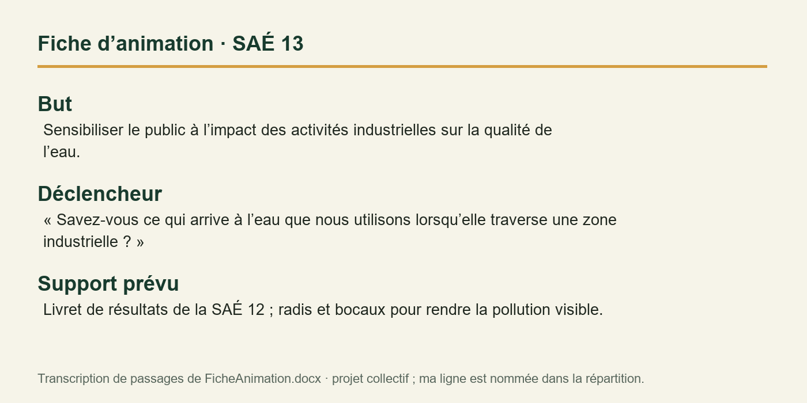
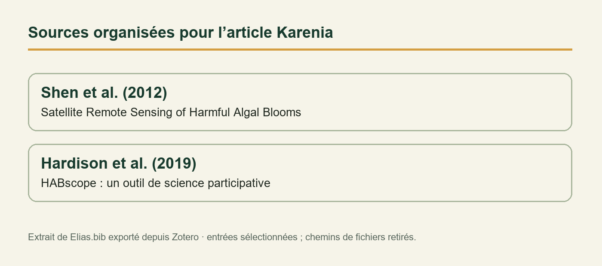
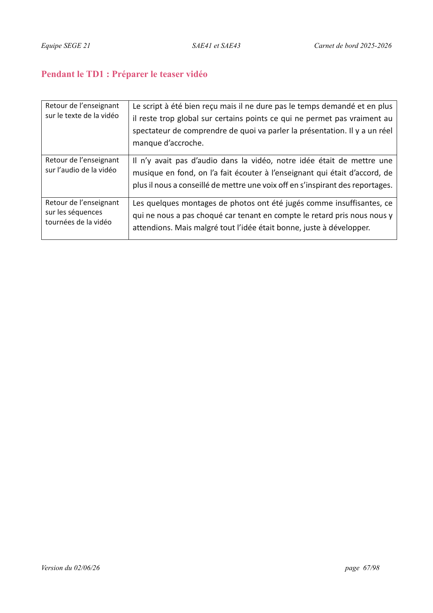
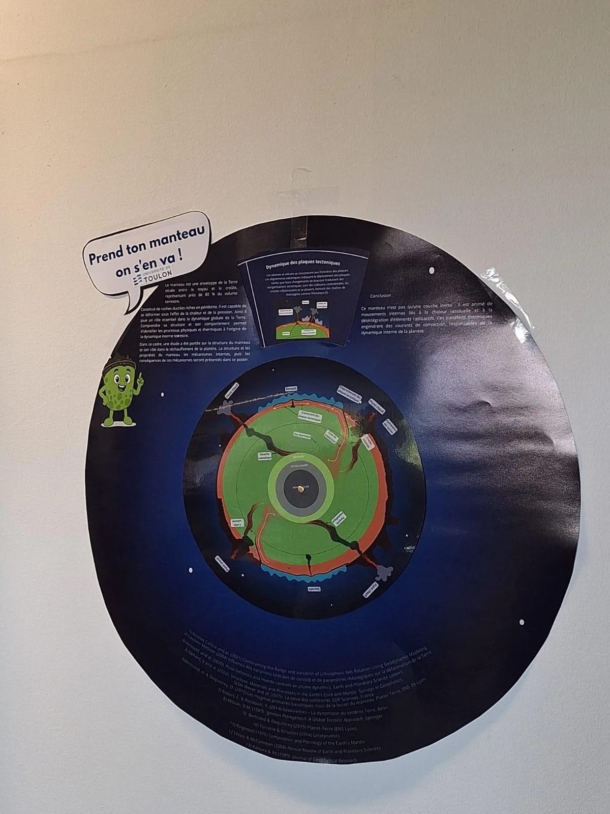
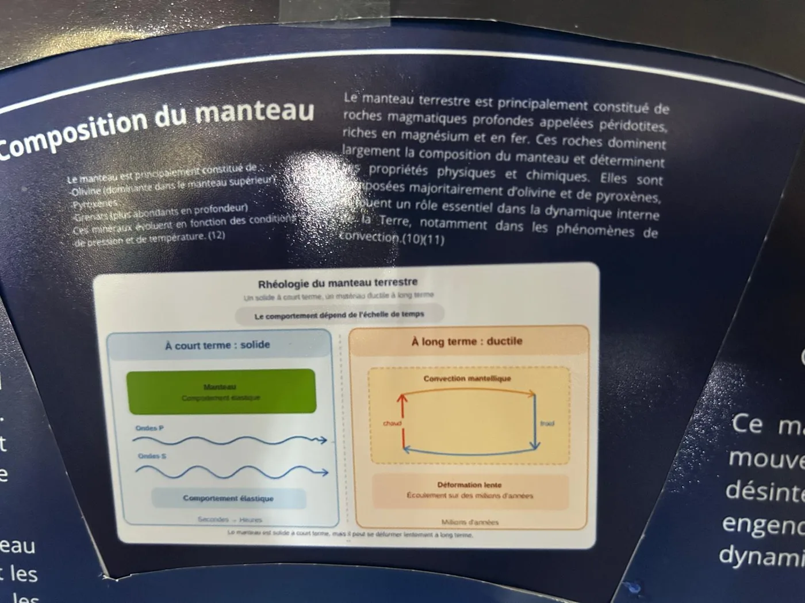
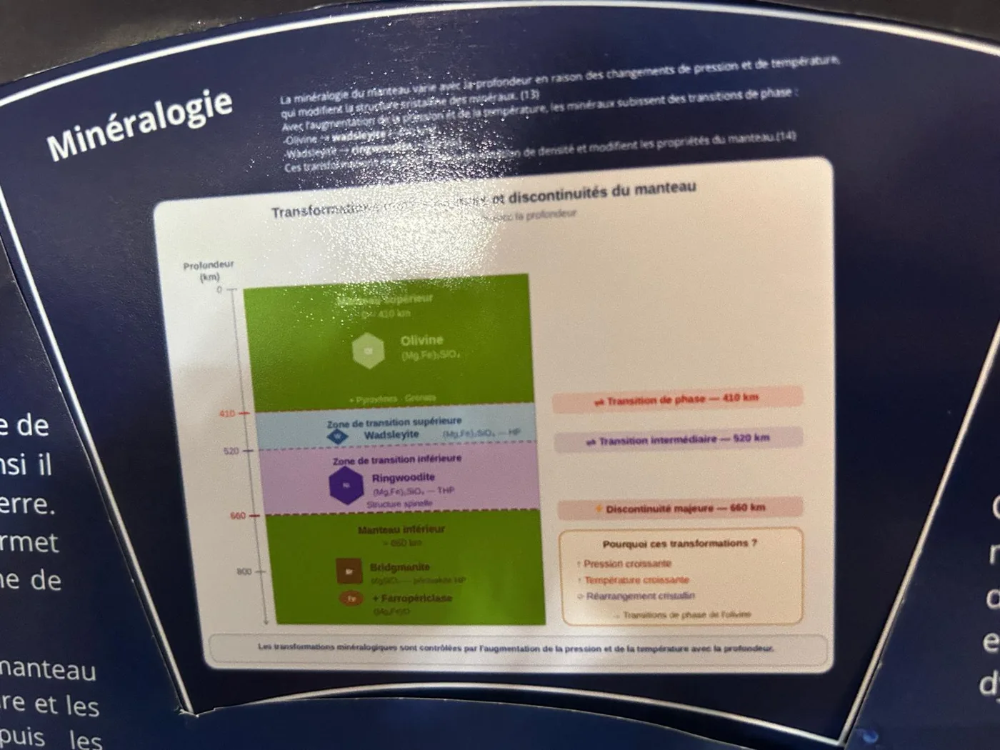

Savoirs
Différencier un résultat, une interprétation et une source ; comprendre les mécanismes que je présente.
Communiquer scientifiquement · progression
L’animation, la revue, le teaser, la conférence et le poster ne demandent pas la même manière de raconter la science.
L1 · SAÉ13 · Sciences à la une
Notre groupe préparait une animation sur les effets possibles des activités industrielles sur l’eau. Les résultats de la SAÉ12 sur les radis servaient de support scientifique ; deux bocaux devaient aider le public à voir la différence entre une eau claire et une eau polluée. La fiche prévoyait une question pour lancer l’échange et du matériel à apporter pour chaque membre.
Ma ligne me rattache au livret de résultats, aux radis et aux bocaux. Pendant l’animation, nous avons retiré une démonstration pour tenir le temps. Dans mon carnet, je note que je rendrais les participants plus actifs et que je simplifierais le déroulé dès le départ.

Agrandir la preuveCe que je montre : la préparation d’un dispositif pédagogique, avec un public, un message et des objets concrets.
 Agrandir la preuve
Agrandir la preuveCe que je corrige : réduire la démonstration et laisser davantage de place au public.
À ce stade : je sais préparer un support simple et je découvre que le temps réel de l’animation change le plan.
L2 · SAÉ33 · revue de la licence
La SAÉ demandait de rédiger des articles scientifiques destinés à former une revue commune. J’ai travaillé sur la façon de suivre et prévoir les blooms toxiques de Karenia brevis en Floride : satellites, capteurs, modèles et contribution de citoyens. Le sujet m’a plu parce qu’il reliait écologie marine, outils de surveillance et conséquences pour le vivant.
J’ai appris à écrire de manière impersonnelle et à attribuer une information à la littérature. Le fichier Elias.bib contient des notices exportées de Zotero, dont Shen et Hardison, utilisées pour construire la recherche bibliographique. Le PDF retrouvé est cependant imparfait : des clés de citation non résolues restent affichées et la section « Références » est vide. Je montre cette limite car elle fait partie de ce qu’il faut corriger pour respecter pleinement le formalisme.
 Agrandir la preuve
Agrandir la preuveEntouré : le passage décrit la télédétection et cite les travaux de Shen et al. sans « je ».
Lire les pages sélectionnées ↗
Agrandir la preuveÀ regarder : auteur, date et titre sont organisés dans l’export ; ce n’est pas une bibliographie correctement affichée dans le PDF final.
 Agrandir la preuve
Agrandir la preuveÀ regarder : le trajet entre prélèvement citoyen, analyse et carte d’alerte. La figure illustre la littérature, elle ne représente pas mes données.
Ce qui a changé : je ne me contente plus d’expliquer ; je dois séparer mes mots des résultats publiés et rendre la référence vérifiable.
L2 · SAÉ43 · conférence SUCCES
Notre équipe présentait El Niño et La Niña, leurs mécanismes, leur modélisation et leurs conséquences écologiques et sociales. Le teaser était une porte d’entrée courte ; la conférence en amphithéâtre demandait ensuite un discours plus précis, appuyé par des figures. Le projet a été construit avec des retours à plusieurs étapes.
Le carnet note que le premier script du teaser était trop global et manquait d’accroche. Nous avons retravaillé la voix, les séquences et les transitions. Pour l’oral, mes figures ont été agrandies puis certaines retirées. Ma partie durait environ dix minutes à une répétition ; j’ai fait un plan plus précis et supprimé des éléments pour revenir au temps prévu. Après deux répétitions en groupe, l’ensemble atteignait environ vingt-cinq minutes.

Agrandir la preuveÀ regarder : le script initial jugé trop global ; la page suivante du PDF détaille les corrections des figures et de la voix.
Lire les pages sélectionnées ↗ Agrandir la preuve
Agrandir la preuveÀ regarder : environ dix minutes au départ, puis suppression de figures et répétitions pour tenir le temps.
Ce que j’en garde : parler devant la licence m’a aidé à prendre confiance. Une figure n’aide que si je la lis vraiment avec le public.
L2 · RAU43 · géodynamique
Le poster de géodynamique devait transformer des notions de composition et de dynamique du manteau en un support visible. Il a été assemblé en groupe. Les vues rapprochées que tu m’as transmises montrent les parties de rhéologie et de minéralogie que j’ai réalisées ; l’ensemble associe textes, schémas et références en bas du support.

Agrandir la preuveÀ regarder : la coupe centrale attire d’abord le regard ; les explications sont disposées autour du schéma.

Agrandir la preuveÀ regarder : la comparaison des comportements à court et long terme, présentée en schéma sur le poster collectif.

Agrandir la preuveÀ regarder : les changements de minéraux avec la profondeur, expliqués par le schéma sur le poster collectif.
Ce que cela ajoute : un poster doit rester lisible à distance, puis donner des détails quand on s’approche.
L3 · transfert à documenter
Ces preuves vont de la L1 à la L2. Je n’ai pas encore sélectionné un livrable de L3 qui permette de décrire avec précision ma contribution. La progression s’arrête ici plutôt que d’inventer une réalisation.
Différencier un résultat, une interprétation et une source ; comprendre les mécanismes que je présente.
Préparer une animation, rédiger un article, sélectionner des figures, enregistrer un teaser et structurer un oral.
Écouter les retours, accepter de retirer une idée et prendre la parole devant un public large.
J’ai aimé rédiger la revue sur Karenia brevis et présenter ENSO en amphithéâtre. Le teaser m’a plu parce qu’il fallait rendre le sujet vivant en peu de temps. Je veux encore mieux contrôler la mise en forme des références avant diffusion.